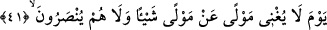
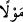

arasının ayrılacağı gündür. Bu kimseden ihlâs ve amelinin sahih olması istenir, kimin
makamı ve amelleri sahih olursa kabul edilir ve o kişi mükâfatlandırılır. Kimin de
amelleri sahih olmazsa onun amelleri kendisine pişmanlık olur.
Mesnevî’de şöyle denilmektedir:
Ne yazık ki yel aldı gitti varlığımızı
Kulun elinde kalan kuru bir hayıflanış
Sonsuza dek sürecek, yanlıştır geçmişe hayıflanmak
Giden gelmez geri artık; boşadır onu anmak
“Hüküm günü, hepsinin varacağı gündür” Öncekilerin ve sonrakilerin toplanacağı o
vakit… Mîkat iş için tâyin edilen zaman demektir. Şu halde kıyâmet günü insanların
hesap ve cezâ için toplanacaklarının kendilerine vaad edilen zamandır.
Bahru’l-‘ulum’da şöyle denilmektedir: Onların mîkatı kendileri için tesbit edilmiş
olan ve asla aşamayacakları sınır demektir. Mekke’ye girmek isteyenlerin ihramsız
geçemeyecekleri mîkat sınırı da bu kabildendir. Zîrâ mîkat bir şeyin kendisiyle
sınırlandırıldığı şeydir.
İbn Şeyh şöyle demiştir: Vakit ile mîkat arasındaki fark şudur: Mîkat kendisine
herhangi bir işin yapılması için tayin edilen zaman ve sınırdır. Vakit ise bir şeyin
kendisinden meydana geldiği zamandır. O şeyin o zamanda yapılması tayin edilmesi
yahut edilmemesi fark etmez.
41. O gün dostun dosta hiçbir faydası olmaz. Ve onlara yardım da edilmez.
“O gün dostun” yakınlık yahut başka bir sebeple dost olan dostun dostluk ve
akrabalık mevzuunda; hangi dost olursa olsun “dosta” dosttan kendisine; ondan bir şeyi
savma yahut herhangi bir karşılık verme konusunda “hiçbir faydası olmaz” Burada
şey’en kelimesi masdar makamındadır. Nekre olması taklîl/azlık içindir. Bu durumda la
yuğni kelimesi hiçbir dost diğer dostundan Allah’ın azâbını bertaraf edemez;
uzaklaştıramaz demek olur.
Burada iğnâ bir şeyi bertaraf edip uzaklaştırmak demektir. Azâbımızdan kaçınmak ya
da fayda elde etmek husûsunda hiç bir kimse diğerine bir şey ulaştıramaz. ”__WORD__/kelimesinin her iki yerde nekre oluşu ibhâm ve kapalılık içindir. Zîrâ Mevlâ kelimesi
birçok mânâda müşterek kullanılır. Mevlâ, Kàmûs’ta da olduğu gibi, mâlik, köle, azatlı,
sâhip, amcaoğlu ve diğer akrabalar gibi yakın, komşu, birbiriyle anlaşmaları olan, oğul,
amca, misafir, ortak, kızkardeşin oğlu, dost, efendi, yardımcı, doyuran, doyurulan,
seven, birinin izinden giden, hısım gibi mânâlarda kullanılır.